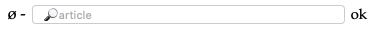
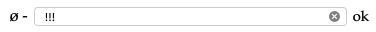
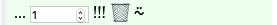
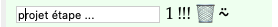
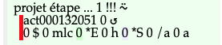
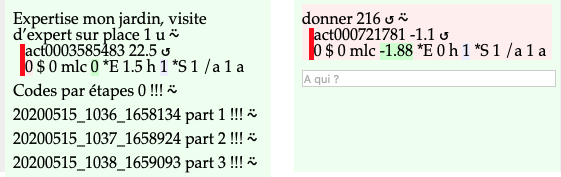

Références/consignel-comment/consignel-comment-propositionetapes.html
Lorsqu'une proposition a un coût en ↺onsignél supérieur à 7 jours, personne ne pourra l'accepter. Il faut donc la proposer en plusieurs étapes acceptables.
Dans la recherche

Inscrivez 3 points d'exclamation. C'est l'unité retenue pour inscrire une remarque.

Une remarque c'est comme toutes les activités. Vous pouvez changer la quantité.

Changez la description de la remarque.

Dans une remarque toutes les valeurs sont à 0.

Vous pouvez ensuite indiquer tous les éléments étape par étape dans la proposition générale.
Utilisez le code QR xxxxxxxx_xxxx_xxxxxx de chacune des parties pour y faire référence.
